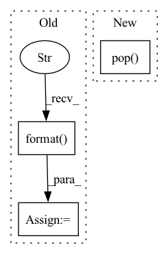

Pattern ID :37739
Before Change
else:
os.environ["CUDA_DEVICE_ORDER"] = "PCI_BUS_ID"
os.environ["CUDA_VISIBLE_DEVICES"] = "{}".format( gpu_id)
device = torch.device("cuda")
torch.manual_seed(131714)
random.seed(131714)After Change
print("All GPUs available should be filled now. Waiting for one process to finish to start the next one.")
processes[0].join()
processes.pop(0)
gpus_available.append(gpus_in_use.pop( 0) )
for process in processes:
print("Waiting for the remainders to finish...")In pattern: SUPERPATTERN
Frequency: 3
Non-data size: 3
Instances Fragment ID: 108377488
Project Name: digitalphonetics/ims-toucan
Commit Name: c2d6763d59533aadfe9096a70cf208455e3aee9c
Time: 2021-10-16
Author: florian.lux@ims.uni-stuttgart.de
File Name: TrainingInterfaces/TrainingPipelines/Tacotron2_MetaCheckpoint.py
M Class Name: AnonimousClass
N Class Name: AnonimousClass
M Method Name: run(5)
N Method Name: run(5)
M Parent Class:
N Parent Class:
M File Name: TrainingInterfaces/TrainingPipelines/Tacotron2_MetaCheckpoint.py
N File Name: TrainingInterfaces/TrainingPipelines/Tacotron2_MetaCheckpoint.py
M Start Line: 12
M End Line: 175
N Start Line: 152
N End Line: 198
Before Change
out_channels = [64, 128, 256, 512]
stack_strides = [1, 2, 2, 2]
for id, (num_block, out_channel, stride) in enumerate(zip(num_blocks, out_channels, stack_strides)):
name = "stack{}_".format( id + 1)
nn = stack(nn, blocks=num_block, filters=out_channel, strides=stride, activation=activation, groups=groups, name=name)
if num_classes > 0:
nn = keras.layers.GlobalAveragePooling2D(name="avg_pool")(nn)After Change
def ResNest(input_shape=(224, 224, 3), stem_type="deep", attn_types="sa", bn_after_attn=False, avg_pool_down=True, pretrained="imagenet", **kwargs):
kwargs.pop( "kwargs", None)
model = AotNet(**locals(), **kwargs)
reload_model_weights(model, pretrained_dict=PRETRAINED_DICT, sub_release="resnest", input_shape=input_shape, pretrained=pretrained)
return model
Fragment ID: 108377504
Project Name: leondgarse/keras_cv_attention_models
Commit Name: 71a1bafc9497805aee4eccd76a74543483d377e1
Time: 2021-10-14
Author: leondgarse@gmail.com
File Name: keras_cv_attention_models/resnest/resnest.py
M Class Name: AnonimousClass
N Class Name: AnonimousClass
M Method Name: ResNest(6)
N Method Name: ResNest(9)
M Parent Class:
N Parent Class:
M File Name: keras_cv_attention_models/resnest/resnest.py
N File Name: keras_cv_attention_models/resnest/resnest.py
M Start Line: 113
M End Line: 134
N Start Line: 69
N End Line: 71
Before Change
x_current = x
for k_layer in range(self.n_layers):
key = "layer_{}".format(k_layer)
key_inverse = "layer_{}".format( self.n_layers - k_layer - 1)
pool_index = pool_indices[key_inverse]
if key in self.norms:
x_current = self.norms[key](self.convolutions[key](self.pools[key](x_current, pool_index)))
else:After Change
layer_modules = self.layer_sequence[self.layer_key(k_layer)]
for module in layer_modules:
if isinstance(module, nn.MaxUnpool2d):
x_current = module(x_current, pool_indices.pop( -1) )
else:
x_current = module(x_current)
Fragment ID: 108377500
Project Name: anderzzz/monkey_caput
Commit Name: 030b5d74b285434e4b91e4727c0183f708c4443e
Time: 2020-10-08
Author: ohrn.anders@gmail.com
File Name: ae_cluster.py
M Class Name: Decoder
N Class Name: Decoder
M Method Name: forward(3)
N Method Name: forward(3)
M Parent Class: Xcoder
N Parent Class: nn.Module
M File Name: ae_cluster.py
N File Name: ae_cluster.py
M Start Line: 142
M End Line: 152
N Start Line: 142
N End Line: 151